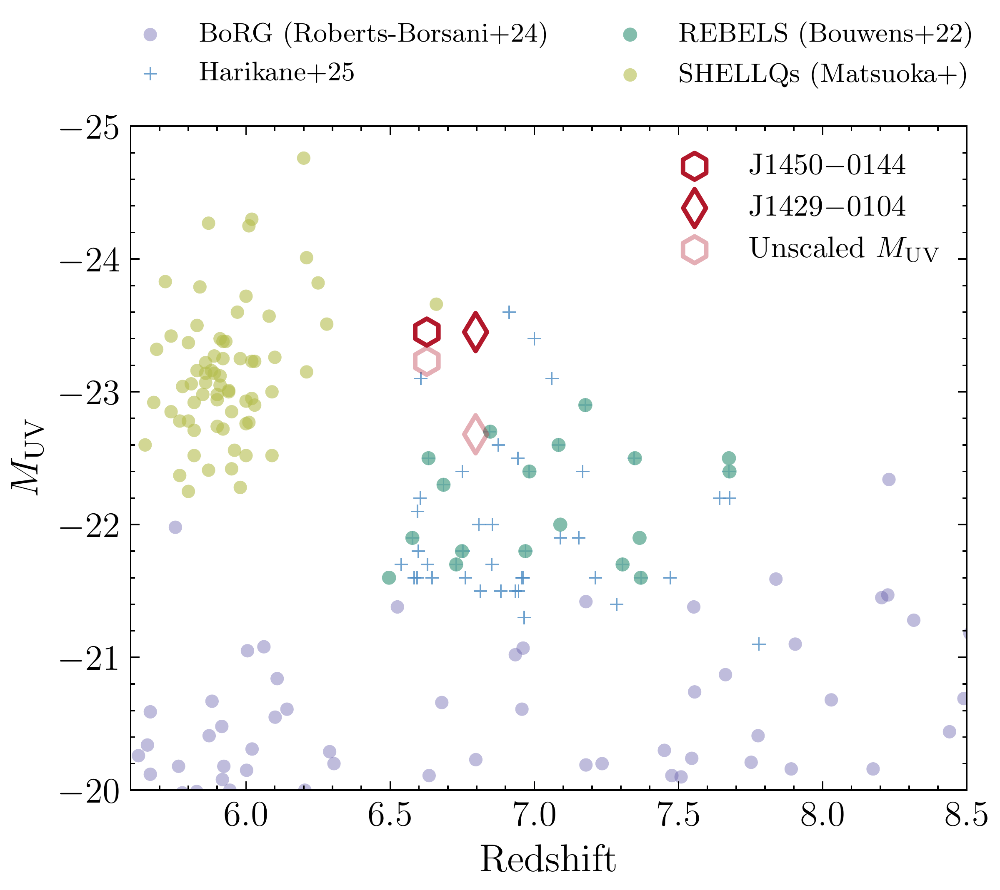
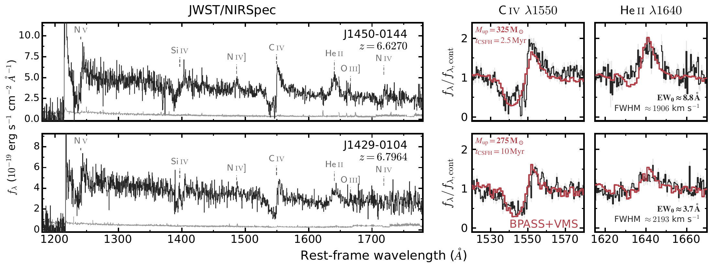
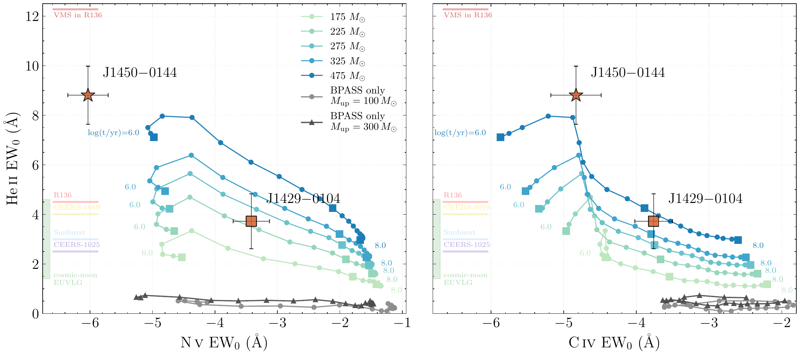
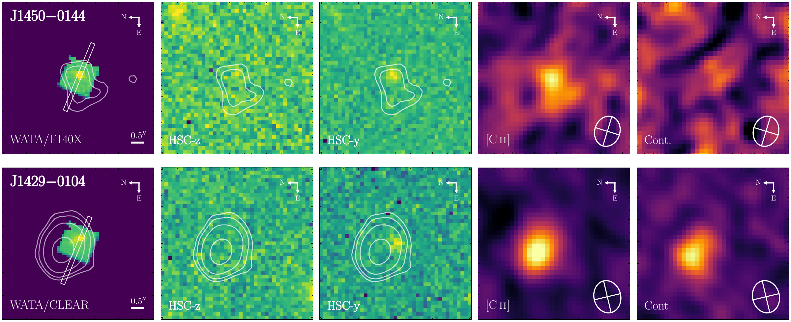

Quasar impostors
At these extreme luminosities, distinguishing galaxies from quasars becomes difficult: intense star formation and accretion onto a supermassive black hole can produce comparable ultraviolet brightness. J1450−0144 and J1429−0104, originally identified in the SHELLQs survey at redshifts 6.63 and 6.80, lie in this overlap. We used detailed JWST spectroscopy to investigate what powers their emission.

Our spectra revealed prominent stellar-wind features in N V, Si IV, and C IV, together with broad He II emission and narrow nebular lines. The combination of blueshifted absorption and emission in the wind features, known as a P Cygni profile, traces material flowing away from massive stars. Together, these signatures show that young stars dominate the ultraviolet light of these sources, leading us to reclassify them as extremely UV-luminous galaxies.

The fingerprints of very massive stars
The broad He II emission is particularly difficult to explain with conventional stellar populations. The standard models we tested cannot reproduce its strength together with the other wind features. Models incorporating very massive stars (VMS), above roughly 100 solar masses, with dedicated calculations of their winds provide a much better description of the spectra.
We also compared the strengths of the wind features with models that allow different maximum stellar masses. The equivalent width measures the strength of a spectral feature relative to the surrounding continuum, allowing us to compare the stellar populations of galaxies with very different total luminosities. The strong He II emission in these two galaxies, especially J1450−0144, places demanding constraints on the models.

These observations provide strong evidence for a VMS contribution, although the precise upper stellar mass depends on assumptions about metallicity and stellar winds. Studying these systems allows us to investigate how the most massive stars contribute to the extraordinary ultraviolet luminosities of early galaxies.
Connecting the stars to their galaxies
ALMA reveals the gas and dust surrounding these stellar populations. Both galaxies have luminous [C II] emission, but their dust properties differ: J1429−0104 is detected in the dust continuum, whereas J1450−0144 remains undetected.
In J1429−0104, the [C II] and dust emission are displaced from the ultraviolet light by about 5.4 kiloparsecs. This suggests that the UV-bright stars and the dust-obscured star formation occupy different regions. The ultraviolet spectrum can therefore provide a detailed view of one stellar population while missing substantial activity elsewhere in the system.

The next step is to establish how common these systems are. Finding more of them will help determine how often extreme stellar populations power the brightest early galaxies, while spatially resolved observations will show how those stars relate to the surrounding gas and dust.